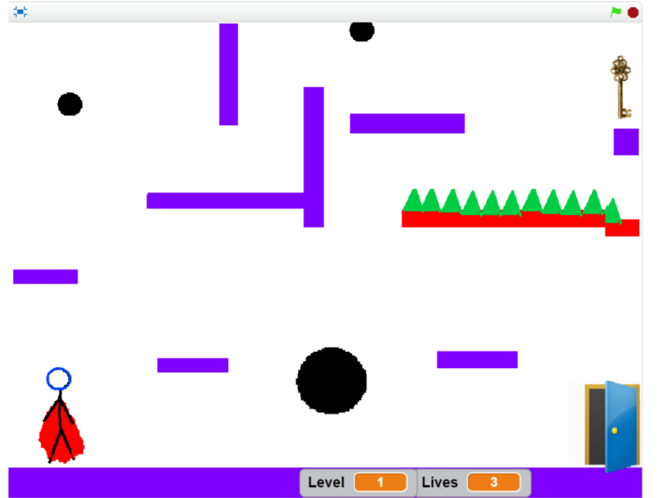

SuperRunner
Introduction
SuperRunner is a scratch game where a superman-like figure runs around in a mario-like manner but can also jump and dash. There are floating steps which the SuperRunner needs to climb in order to claim a key to go to the next scene. The SuperRunner will have to choose its tactic before climbing the steps as some are wide apart, some disappear a few seconds after you step on them and some are on fire and will take one of three lives. There are black holes that cause one damage and disappear. There will be at least five levels.

Objects:
- SuperRunner: Stick figure with a red cape that can jump with SPACEBAR or UPARROW, move left with LEFTARROW, right with RIGHTARROW, dash with double arrows, has 3 lives, can claim keys and open doors.
- Normal Tile: Hovers somewhere and SuperRunner can step on it and stay there without it falling or disappearing.
- Disappearing tile: Hovers somewhere and SuperRunner can step on it. However, it disappears after a couple seconds within Super Runner stepping on it.
- Fire Tile: Hover somewhere and causes one damage when touched by SuperRunner.
- Black Hole: A black hole that causes one damage when touched, but then disappears.
- Key: Collectible by SuperRunner and lets him open one door.
- Doors: Can be opened with a key by SuperRunner and lead to the next level.
Game Flow
The user will be introduced to the game with a starting screen that explains the controlling keys, jump with SPACEBAR or UPARROW, move left with LEFTARROW, right with RIGHTARROW, dash with double arrows. It’ll explained that the player must reach the key, touch it and claim it, go back down alive and go through the door to the next level, all that without touching any dangerous objects, such as Fire tiles and black holes. These will be placed in strategic places to make the game harder and more entertaining. The cape will be animated as well the the SuperRunner’s walking and dashing. The last level will be the hardest, and the player will have to complete it with one life as when you go through the door you go through two black holes. One life is added each level, with the maximum of 3 lives total.